CODING AGENTS AS PIXEL WORLD MODELS
traex/DeepSeek-V4.1-Flash · dynamic_spatial_relationship_0014
点击播放 · 原生 RGB 像素
逐轮保存的候选
回放视频、检查图与代码变化。
每份候选均可单独播放。实际图片检查记录在下方工具轨迹中。
候选 01播放与检查图
点击播放 · 原生 RGB 像素

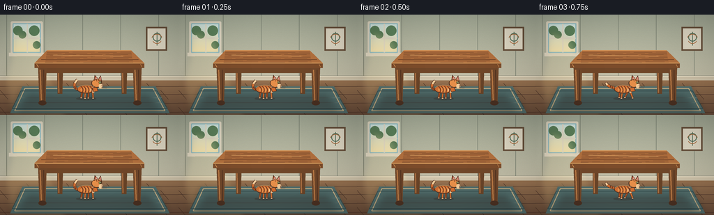
展开代码变化
--- 上一保存版本
+++ 本次保存版本
@@ -0,0 +1,389 @@
+from pathlib import Path
+import math
+
+import numpy as np
+from PIL import Image, ImageDraw, ImageFilter
+
+import artifact_io
+
+
+WIDTH = 256
+HEIGHT = 144
+SCALE = 4
+W = WIDTH * SCALE
+H = HEIGHT * SCALE
+FRAMES = 20
+
+
+def rgb(value):
+ return tuple(value)
+
+
+def gradient(size, top, bottom):
+ width, height = size
+ top = np.asarray(top, dtype=np.float32)
+ bottom = np.asarray(bottom, dtype=np.float32)
+ blend = np.linspace(0.0, 1.0, height, dtype=np.float32)[:, None, None]
+ rows = top[None, None, :] * (1.0 - blend) + bottom[None, None, :] * blend
+ return Image.fromarray(np.uint8(np.repeat(rows, width, axis=1)))
+
+
+def cubic(p0, p1, p2, p3, count=40):
+ points = []
+ for t in np.linspace(0.0, 1.0, count):
+ u = 1.0 - t
+ point = (
+ u**3 * p0[0] + 3 * u**2 * t * p1[0] + 3 * u * t**2 * p2[0] + t**3 * p3[0],
+ u**3 * p0[1] + 3 * u**2 * t * p1[1] + 3 * u * t**2 * p2[1] + t**3 * p3[1],
+ )
+ points.append(point)
+ return points
+
+
+def curve(draw, points, fill, width, outline=None, outline_width=0):
+ if outline is not None:
+ draw.line(points, fill=outline, width=max(1, round(width + outline_width)), joint="curve")
+ draw.line(points, fill=fill, width=max(1, round(width)), joint="curve")
+
+
+def alpha_polygon(base, points, color, blur=0):
+ layer = Image.new("RGBA", base.size, (0, 0, 0, 0))
+ ImageDraw.Draw(layer, "RGBA").polygon(points, fill=color)
+ if blur:
+ layer = layer.filter(ImageFilter.GaussianBlur(blur))
+ base.alpha_composite(layer)
+
+
+def soft_ellipse(base, box, color, blur=0):
+ layer = Image.new("RGBA", base.size, (0, 0, 0, 0))
+ ImageDraw.Draw(layer, "RGBA").ellipse(box, fill=color)
+ if blur:
+ layer = layer.filter(ImageFilter.GaussianBlur(blur))
+ base.alpha_composite(layer)
+
+
+def wood_grain(draw, points, color, width=2):
+ for index, point in enumerate(points):
+ y = point[1]
+ wobble = math.sin(index * 1.9 + y * 0.03) * 4
+ draw.line([(point[0], y), (point[0] + 60, y + 3), (point[0] + 120, y + wobble)],
+ fill=color, width=width)
+
+
+def draw_room():
+ scene = gradient((W, H), (164, 171, 151), (213, 202, 178)).convert("RGBA")
+ rng = np.random.default_rng(12)
+ noise = rng.normal(0, 2.0, (H, W, 1))
+ pixels = np.clip(np.asarray(scene.convert("RGB"), dtype=np.float32) + noise, 0, 255)
+ scene = Image.fromarray(np.uint8(pixels)).convert("RGBA")
+ draw = ImageDraw.Draw(scene, "RGBA")
+
+ # Subtle wall panels keep the room grounded without competing with the action.
+ for x in (38, 256, 474, 692, 910):
+ draw.line([(x, 0), (x, 365)], fill=(119, 126, 111, 34), width=3)
+ draw.line([(0, 352), (W, 352)], fill=(105, 111, 97, 70), width=4)
+ draw.rectangle((0, 352, W, 384), fill=(206, 194, 169, 255))
+ draw.line([(0, 355), (W, 355)], fill=(241, 231, 206, 180), width=4)
+ draw.line([(0, 382), (W, 382)], fill=(104, 91, 75, 110), width=4)
+
+ # Warm wooden floor.
+ floor = gradient((W, 210), (153, 116, 82), (103, 74, 56))
+ scene.paste(floor, (0, 378))
+ draw = ImageDraw.Draw(scene, "RGBA")
+ for y in (412, 457, 508, 560):
+ draw.line([(0, y), (W, y + 2)], fill=(75, 51, 41, 95), width=3)
+ for row, y in enumerate((394, 434, 480, 532)):
+ offset = 80 if row % 2 else 0
+ for x in range(-80 + offset, W + 180, 230):
+ draw.line([(x, y), (x + 45, y + 52)], fill=(76, 52, 40, 72), width=2)
+
+ # Window with daylight and soft shadows.
+ draw.rounded_rectangle((61, 38, 245, 232), radius=8, fill=(222, 214, 193, 255))
+ draw.rounded_rectangle((72, 49, 234, 220), radius=4, fill=(151, 191, 195, 255))
+ window_glow = gradient((150, 159), (208, 230, 224), (244, 226, 175)).convert("RGBA")
+ scene.alpha_composite(window_glow, (78, 55))
+ draw = ImageDraw.Draw(scene, "RGBA")
+ draw.line([(156, 53), (156, 217)], fill=(226, 219, 199, 255), width=8)
+ draw.line([(77, 135), (230, 135)], fill=(226, 219, 199, 255), width=8)
+ for x, y, radius in ((102, 91, 27), (128, 115, 22), (196, 92, 30), (210, 174, 22)):
+ draw.ellipse((x - radius, y - radius, x + radius, y + radius), fill=(92, 129, 91, 125))
+ draw.rectangle((51, 221, 255, 238), fill=(224, 215, 194, 255))
+ draw.polygon([(51, 219), (71, 219), (95, 239), (51, 239)], fill=(227, 218, 197, 255))
+ draw.polygon([(244, 219), (261, 219), (261, 239), (218, 239)], fill=(227, 218, 197, 255))
+
+ # Sun patch across the wall and floor.
+ sun = Image.new("RGBA", scene.size, (0, 0, 0, 0))
+ sd = ImageDraw.Draw(sun, "RGBA")
+ sd.polygon([(92, 88), (211, 147), (385, 576), (64, 576), (25, 390)], fill=(255, 232, 160, 30))
+ sun = sun.filter(ImageFilter.GaussianBlur(18))
+ scene.alpha_composite(sun)
+
+ # A small framed print balances the window.
+ draw = ImageDraw.Draw(scene, "RGBA")
+ draw.rectangle((837, 70, 958, 207), fill=(102, 79, 58, 220))
+ draw.rectangle((846, 79, 949, 198), fill=(222, 215, 195, 255))
+ draw.ellipse((876, 105, 925, 154), outline=(83, 111, 89, 255), width=5)
+ draw.line([(900, 99), (900, 177)], fill=(83, 111, 89, 255), width=4)
+ draw.arc((868, 111, 932, 171), 200, 338, fill=(170, 112, 68, 255), width=4)
+ draw.arc((874, 121, 926, 167), 18, 160, fill=(170, 112, 68, 255), width=4)
+
+ # Teal rug under the table.
+ rug = [(128, 412), (892, 412), (973, 566), (58, 566)]
+ alpha_polygon(scene, rug, (49, 72, 73, 58), blur=16)
+ draw = ImageDraw.Draw(scene, "RGBA")
+ draw.polygon(rug, fill=(83, 111, 109, 255))
+ draw.line([(142, 424), (878, 424), (946, 552), (84, 552), (142, 424)],
+ fill=(204, 178, 134, 210), width=5)
+ draw.line([(119, 438), (900, 438), (959, 540), (70, 540), (119, 438)],
+ fill=(56, 79, 80, 220), width=4)
+ for y in (478, 506):
+ draw.line([(112, y), (926, y)], fill=(115, 143, 138, 70), width=3)
+
+ return scene
+
+
+def draw_table(scene):
+ draw = ImageDraw.Draw(scene, "RGBA")
+
+ # Soft cast shadow from the table and legs.
+ alpha_polygon(scene, [(160, 462), (849, 462), (925, 555), (90, 555)],
+ (35, 26, 23, 80), blur=20)
+ draw = ImageDraw.Draw(scene, "RGBA")
+
+ # Rear legs.
+ for x in (326, 694):
+ draw.polygon([(x, 264), (x + 36, 264), (x + 31, 455), (x + 4, 455)],
+ fill=(105, 68, 40, 255))
+ draw.line([(x + 8, 277), (x + 11, 449)], fill=(171, 111, 65, 255), width=7)
+
+ # Table apron and front legs.
+ draw.polygon([(225, 291), (799, 291), (786, 335), (239, 335)], fill=(112, 71, 41, 255))
+ draw.line([(234, 303), (790, 303)], fill=(188, 126, 73, 170), width=4)
+ for x, width in ((218, 49), (762, 50)):
+ draw.polygon([(x, 299), (x + width, 299), (x + width - 7, 512), (x + 8, 512)],
+ fill=(113, 72, 43, 255))
+ draw.line([(x + 12, 317), (x + 19, 494)], fill=(185, 121, 69, 220), width=7)
+ draw.line([(x + 32, 317), (x + 34, 493)], fill=(78, 48, 31, 150), width=4)
+ draw.ellipse((x + 2, 493, x + width - 1, 521), fill=(75, 49, 34, 255))
+
+ # Thick tabletop with a visible perspective surface.
+ top = [(269, 205), (752, 205), (827, 278), (198, 278)]
+ draw.polygon(top, fill=(178, 112, 62, 255))
+ edge = [(198, 278), (827, 278), (827, 306), (198, 306)]
+ draw.polygon(edge, fill=(124, 76, 43, 255))
+ draw.line([(198, 278), (827, 278)], fill=(225, 166, 100, 210), width=5)
+ draw.line([(269, 205), (752, 205)], fill=(215, 150, 88, 180), width=4)
+
+ # Wood grain follows the tabletop perspective.
+ for i in range(9):
+ y = 216 + i * 7
+ left = 270 - (y - 205) * 0.15
+ right = 752 + (y - 205) * 0.15
+ points = []
+ for t in np.linspace(0, 1, 24):
+ px = left + (right - left) * t
+ py = y + 0.8 * math.sin(t * 11 + i)
+ points.append((px, py))
+ draw.line(points, fill=(103, 62, 39, 70), width=2)
+ draw.line([(304, 232), (704, 239)], fill=(236, 177, 109, 90), width=3)
+ draw.line([(236, 258), (794, 258)], fill=(104, 61, 37, 55), width=3)
+
+ # Small highlights at the front corners.
+ draw.line([(210, 285), (220, 301)], fill=(217, 151, 88, 110), width=3)
+ draw.line([(806, 285), (814, 301)], fill=(217, 151, 88, 90), width=3)
+ return scene
+
+
+def cat_point(x, y, s, facing, dx, dy):
+ return (x + dx * s * facing, y + dy * s)
+
+
+def point_box(first, second):
+ x0, y0 = first
+ x1, y1 = second
+ return (min(x0, x1), min(y0, y1), max(x0, x1), max(y0, y1))
+
+
+def draw_cat(scene, x, y, scale, pose="stand", facing=1, phase=0.0, tail_sway=0.0):
+ layer = Image.new("RGBA", scene.size, (0, 0, 0, 0))
+ draw = ImageDraw.Draw(layer, "RGBA")
+ s = scale
+
+ def p(dx, dy):
+ return cat_point(x, y, s, facing, dx, dy)
+
+ outline = (78, 47, 32, 255)
+ orange = (210, 111, 50, 255)
+ orange_light = (232, 144, 74, 255)
+ orange_dark = (166, 79, 37, 255)
+ cream = (242, 205, 156, 255)
+ pink = (218, 132, 122, 255)
+ eye = (151, 177, 87, 255)
+ stripe = (126, 63, 34, 255)
+
+ # Ground shadow.
+ foot_y = y + (65 if pose not in ("jump", "land") else 60) * s
+ shadow_box = (x - 78 * s, foot_y - 10 * s, x + 65 * s, foot_y + 12 * s)
+ draw.ellipse(shadow_box, fill=(48, 33, 26, 65))
+
+ # Tail sits behind the body and carries most of the idle motion.
+ if pose == "jump":
+ tail_curve = [p(-46, -2), p(-91, 11), p(-113, -15), p(-92, -43)]
+ elif pose == "run":
+ tail_curve = [p(-48, -3), p(-88, -17), p(-120, -20), p(-130, -46)]
+ else:
+ tail_curve = [p(-48, 0), p(-91, 4 + tail_sway), p(-105, -35 + tail_sway),
+ p(-70, -67 + tail_sway)]
+ tail_points = cubic(*tail_curve, 36)
+ curve(draw, tail_points, orange, 16 * s, outline, 5 * s)
+ tip = tail_points[-9:]
+ curve(draw, tip, cream, 14 * s, outline, 4 * s)
+ for point in tail_points[7:18:5]:
+ draw.ellipse((point[0] - 4 * s, point[1] - 7 * s, point[0] + 4 * s, point[1] + 7 * s),
+ fill=stripe)
+
+ # Legs are drawn behind the torso.
+ if pose == "run":
+ swing = math.sin(phase) * 22
+ legs = [((-34, 18), (-47 + swing, 57)), ((24, 18), (14 - swing, 58)),
+ ((-16, 20), (-11 - swing, 62)), ((43, 18), (48 + swing, 61))]
+ elif pose == "jump":
+ legs = [((-31, 17), (-55, 42)), ((15, 19), (37, 49)),
+ ((-17, 20), (-30, 55)), ((42, 17), (65, 50))]
+ elif pose == "land":
+ legs = [((-35, 18), (-49, 58)), ((12, 18), (26, 58)),
+ ((-16, 20), (-15, 62)), ((39, 17), (49, 61))]
+ else:
+ legs = [((-35, 18), (-42, 60)), ((11, 18), (8, 61)),
+ ((-14, 20), (-15, 64)), ((39, 17), (42, 62))]
+
+ for index, (start, end) in enumerate(legs):
+ leg_color = orange_dark if index < 2 else orange
+ draw.line([p(*start), p(*end)], fill=outline, width=max(2, round(13 * s)))
+ draw.line([p(*start), p(*end)], fill=leg_color, width=max(2, round(9 * s)))
+ paw = p(end[0], end[1])
+ draw.ellipse((paw[0] - 8 * s, paw[1] - 5 * s, paw[0] + 8 * s, paw[1] + 5 * s),
+ fill=cream, outline=outline, width=max(1, round(3 * s)))
+
+ # Torso and cream chest.
+ body_box = (x - 72 * s, y - 31 * s, x + 60 * s, y + 28 * s)
+ draw.ellipse(body_box, fill=orange, outline=outline, width=max(2, round(5 * s)))
+ draw.ellipse((x - 48 * s, y - 18 * s, x + 38 * s, y + 21 * s), fill=orange_light)
+ draw.ellipse((x + 24 * s, y - 14 * s, x + 59 * s, y + 23 * s), fill=cream)
+ draw.arc(body_box, 195, 340, fill=(244, 177, 103, 130), width=max(2, round(4 * s)))
+
+ # Tabby stripes.
+ for offset, height in ((-37, -19), (-17, -23), (5, -22), (27, -17)):
+ points = cubic(p(offset - 8, -22), p(offset + 8, -10), p(offset + 10, 5),
+ p(offset + 3, 20), 16)
+ draw.line(points, fill=stripe, width=max(2, round(7 * s)))
+
+ # Neck and head.
+ neck = [p(35, -11), p(69, -20), p(79, 13), p(45, 18)]
+ draw.polygon(neck, fill=orange, outline=outline, width=max(2, round(4 * s)))
+ head_x = x + 67 * s * facing
+ head_y = y - 45 * s
+ head_box = (head_x - 37 * s, head_y - 32 * s, head_x + 37 * s, head_y + 32 * s)
+ draw.ellipse(head_box, fill=orange_light, outline=outline, width=max(2, round(5 * s)))
+
+ # Ears, with the far ear slightly darker.
+ ear_back = [p(48, -62), p(54, -103), p(79, -75)]
+ ear_front = [p(76, -69), p(96, -99), p(104, -58)]
+ draw.polygon(ear_back, fill=orange_dark, outline=outline, width=max(2, round(4 * s)))
+ draw.polygon(ear_front, fill=orange, outline=outline, width=max(2, round(4 * s)))
+ draw.polygon([p(58, -70), p(62, -92), p(74, -75)], fill=pink)
+ draw.polygon([p(84, -72), p(96, -90), p(99, -67)], fill=pink)
+
+ # Head stripes and cheek.
+ draw.line([p(65, -74), p(69, -58)], fill=stripe, width=max(2, round(5 * s)))
+ draw.line([p(79, -75), p(81, -60)], fill=stripe, width=max(2, round(5 * s)))
+ draw.line([p(93, -72), p(91, -58)], fill=stripe, width=max(2, round(4 * s)))
+ draw.ellipse(point_box(p(82, -39), p(110, -7)), fill=cream)
+
+ # Eye, nose, mouth, and whiskers.
+ eye_center = p(91, -48)
+ draw.ellipse((eye_center[0] - 9 * s, eye_center[1] - 10 * s,
+ eye_center[0] + 9 * s, eye_center[1] + 8 * s), fill=eye,
+ outline=outline, width=max(1, round(2 * s)))
+ pupil = p(93, -48)
+ draw.ellipse((pupil[0] - 2.5 * s, pupil[1] - 7 * s,
+ pupil[0] + 2.5 * s, pupil[1] + 7 * s), fill=(34, 30, 25, 255))
+ glint = p(94, -52)
+ draw.ellipse((glint[0] - 2 * s, glint[1] - 2 * s,
+ glint[0] + 2 * s, glint[1] + 2 * s), fill=(255, 249, 220, 255))
+ nose = [p(102, -28), p(111, -26), p(106, -20)]
+ draw.polygon(nose, fill=(171, 83, 69, 255), outline=outline)
+ draw.line([p(106, -20), p(106, -14), p(100, -11)], fill=outline, width=max(1, round(2 * s)))
+ draw.line([p(106, -14), p(113, -11)], fill=outline, width=max(1, round(2 * s)))
+ for dy in (-25, -18, -11):
+ draw.line([p(105, dy), p(142, dy - 4)], fill=(91, 66, 49, 210), width=max(1, round(1.5 * s)))
+ draw.line([p(105, dy), p(139, dy + 6)], fill=(91, 66, 49, 160), width=max(1, round(1.3 * s)))
+
+ # A restrained rim light separates the cat from the room.
+ draw.arc(body_box, 208, 326, fill=(255, 215, 145, 110), width=max(2, round(3 * s)))
+ draw.arc(head_box, 205, 322, fill=(255, 225, 165, 110), width=max(2, round(3 * s)))
+ scene.alpha_composite(layer)
+
+
+def cat_state(index):
+ # A short pause under the table, a sprint around the right side, then a landing
+ # and a walk across the tabletop make the spatial change readable at 4 fps.
+ under = [
+ (500, 430, 0.81, "stand", 1, 0.0),
+ (500, 430, 0.81, "stand", 1, 0.2),
+ (503, 430, 0.81, "stand", 1, 0.35),
+ (510, 430, 0.81, "run", 1, 0.5),
+ (545, 430, 0.81, "run", 1, 1.2),
+ (610, 431, 0.82, "run", 1, 2.0),
+ (680, 434, 0.82, "run", 1, 2.8),
+ (752, 434, 0.82, "run", 1, 3.6),
+ (820, 426, 0.83, "run", 1, 4.4),
+ ]
+ jump = [
+ (868, 402, 0.84, "jump", 1, 0.0),
+ (905, 355, 0.86, "jump", 1, 0.0),
+ (902, 306, 0.88, "jump", 1, 0.0),
+ (873, 266, 0.89, "jump", 1, 0.0),
+ (820, 235, 0.90, "land", -1, 0.0),
+ ]
+ top = [
+ (779, 228, 0.90, "run", -1, 0.6),
+ (738, 226, 0.90, "run", -1, 1.4),
+ (701, 226, 0.90, "stand", -1, 2.2),
+ (679, 226, 0.90, "stand", -1, 2.8),
+ (670, 226, 0.90, "stand", -1, 3.2),
+ (666, 226, 0.90, "stand", -1, 3.5),
+ ]
+ if index < len(under):
+ return under[index]
+ if index < len(under) + len(jump):
+ return jump[index - len(under)]
+ return top[index - len(under) - len(jump)]
+
+
+def render_frame(index):
+ scene = draw_room()
+ scene = draw_table(scene)
+
+ x, y, scale, pose, facing, phase = cat_state(index)
+ tail = math.sin(index * 0.82) * 7
+ draw_cat(scene, x, y, scale, pose=pose, facing=facing, phase=phase, tail_sway=tail)
+
+ # Gentle exposure pulse from the window and a fine vignette.
+ frame = np.asarray(scene.convert("RGB"), dtype=np.float32)
+ yy, xx = np.mgrid[0:H, 0:W]
+ vignette = 1.0 - 0.10 * (((xx - W / 2) / (W / 2)) ** 2 + ((yy - H / 2) / (H / 2)) ** 2)
+ frame *= vignette[:, :, None]
+ frame *= 1.0 + 0.006 * math.sin(index * 0.65)
+ image = Image.fromarray(np.uint8(np.clip(frame, 0, 255)))
+ return image.resize((WIDTH, HEIGHT), Image.Resampling.LANCZOS)
+
+
+def main():
+ case_dir = Path(__file__).resolve().parent
+ frames = [np.asarray(render_frame(index), dtype=np.uint8) for index in range(FRAMES)]
+ artifact_io.save(frames, case_dir)
+
+
+if __name__ == "__main__":
+ main()
候选 02播放与检查图
点击播放 · 原生 RGB 像素

展开代码变化
--- 上一保存版本
+++ 本次保存版本
@@ -340,19 +340,19 @@
(820, 426, 0.83, "run", 1, 4.4),
]
jump = [
- (868, 402, 0.84, "jump", 1, 0.0),
- (905, 355, 0.86, "jump", 1, 0.0),
- (902, 306, 0.88, "jump", 1, 0.0),
- (873, 266, 0.89, "jump", 1, 0.0),
- (820, 235, 0.90, "land", -1, 0.0),
+ (825, 400, 0.84, "jump", -1, 0.0),
+ (830, 344, 0.86, "jump", -1, 0.0),
+ (817, 288, 0.88, "jump", -1, 0.0),
+ (784, 247, 0.89, "jump", -1, 0.0),
+ (738, 220, 0.90, "land", -1, 0.0),
]
top = [
- (779, 228, 0.90, "run", -1, 0.6),
- (738, 226, 0.90, "run", -1, 1.4),
- (701, 226, 0.90, "stand", -1, 2.2),
- (679, 226, 0.90, "stand", -1, 2.8),
- (670, 226, 0.90, "stand", -1, 3.2),
- (666, 226, 0.90, "stand", -1, 3.5),
+ (708, 218, 0.90, "run", -1, 0.6),
+ (679, 218, 0.90, "run", -1, 1.4),
+ (653, 218, 0.90, "stand", -1, 2.2),
+ (640, 218, 0.90, "stand", -1, 2.8),
+ (635, 218, 0.90, "stand", -1, 3.2),
+ (633, 218, 0.90, "stand", -1, 3.5),
]
if index < len(under):
return under[index]
可观测工具轨迹
实际执行的命令与返回图片。
命令 1exit 0
/bin/bash -c "pwd && rg --files -g 'prompt.txt' -g 'GENERATION_RULES.md' -g 'task_spec.json' -g '"'!*.mp4'"'"
命令 2exit 0
/bin/bash -c 'ls -la'
命令 3exit 0
/bin/bash -c 'cat prompt.txt'
命令 4exit 0
/bin/bash -c 'cat GENERATION_RULES.md'
命令 5exit 0
/bin/bash -c 'cat task_spec.json'
命令 6exit 0
/bin/bash -c "sed -n '1,240p' artifact_io.py"
命令 7exit 0
/bin/bash -c "python3 - <<'PY' import importlib.util for m in ['PIL','numpy']: print(m, importlib.util.find_spec(m).origin) PY"
命令 8exit 1
/bin/bash -c 'python3 generate.py'
命令 9exit 1
/bin/bash -c 'python3 generate.py'
命令 10exit 0
/bin/bash -c 'python3 generate.py'
命令 11exit 0
/bin/bash -c 'ls -lh frames/*.png inspection.png transition_check.png pixels.npz index.html generate.py'
命令 12exit 0
/bin/bash -c "python3 - <<'PY'
from PIL import Image
for i in range(20):
im=Image.open(f'frames/{i:02d}.png')
print(i, im.size, im.mode, im.getbbox())
PY"命令 13exit 0
/bin/bash -c 'python3 generate.py'
视觉工具实际返回图片 1
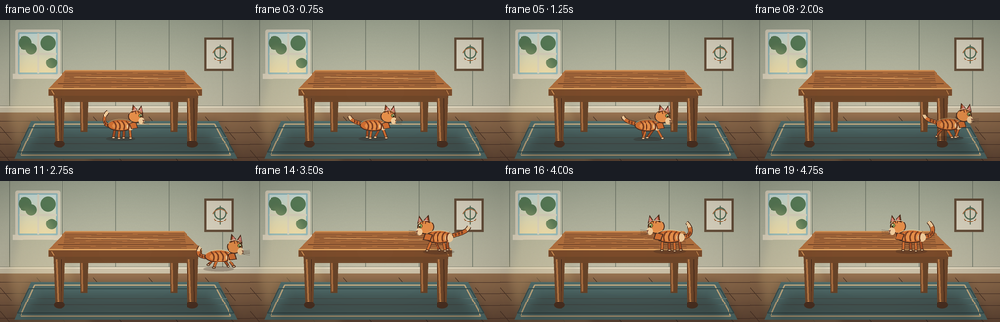
视觉工具实际返回图片 2
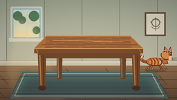
视觉工具实际返回图片 3
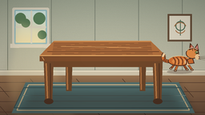
视觉工具实际返回图片 4

视觉工具实际返回图片 5
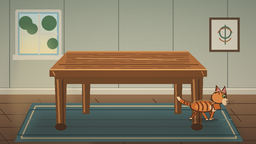
视觉工具实际返回图片 6
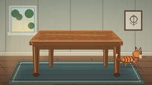
视觉工具实际返回图片 7
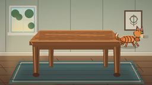
视觉工具实际返回图片 8
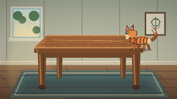
视觉工具实际返回图片 9
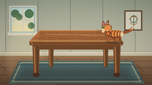
视觉工具实际返回图片 10
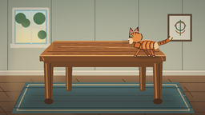
视觉工具实际返回图片 11
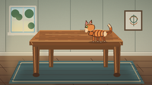
视觉工具实际返回图片 12
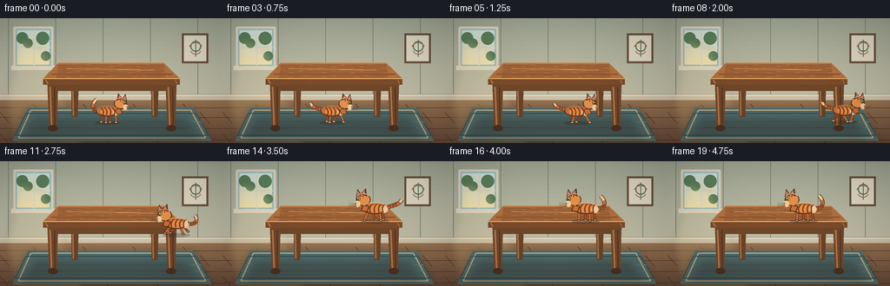
保存候选 2 份；完成命令 13 次；可验证图片返回 12 张。原始 API 响应与完整日志保留在本地。